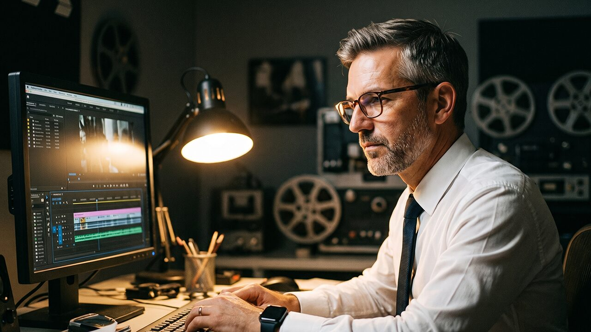

Über mich
Thomas Dietsch — Content Creator & KI-Spezialist, Köln
Über 20 Jahre Bewegtbild, eine Ausbildung als Tischler und eine gehörige Portion Neugier auf alles, was mit KI kommt: Ich bin der Kopf hinter VibeDL – Content Creator und KI-Spezialist, mit zwei Jahrzehnten Postproduktion im Rücken.
Ich glaube, dass gute Technik-Geschichten nicht kompliziert klingen müssen. Deshalb verbinde ich zwei Welten, die selten zusammen gedacht werden: zwei Jahrzehnte professionelles Storytelling vor und hinter der Kamera – und die Neugier, wohin uns KI und Energiewende als Nächstes bringen.

Werdegang
Mein Weg zur Kamera war nicht geradlinig: Ich habe als Tischler, Glastechniker und Steinmetz angefangen (IHK-Abschluss 1997) – ein Handwerk, bei dem Präzision und Auge fürs Detail zählen. 2003 habe ich mich für die Ausbildung zum Mediengestalter Bild & Ton an der Medienfabrik Köln entschieden und bin seitdem im Bewegtbild geblieben.
Über Stationen als Cutterassistent, freiberuflicher Kameramann und Studioleiter bei der Redseven Entertainment GmbH habe ich mich zum Headcutter und Projekteditor sowie zum Cutter bei ITV Studios Germany weiterentwickelt – zuletzt als Head of Postproduction bei der Raab Entertainment GmbH. Auf dem Weg dahin habe ich Konzeption, Dreh und Schnitt für zahlreiche Formate verantwortet und Teams geführt.
Heute konzentriere ich mich ganz auf eigene Inhalte und KI-gestützte Produktion. Was in den Redaktionen als Werkzeugkasten begann – ChatGPT, Envato Gen AI, Veo –, ist längst mein Arbeitsalltag: Recherche, Skript, generative Videoelemente und Schnitt greifen bei mir ineinander.
Genau diese Schnittstelle aus zwei Jahrzehnten Postproduktions-Erfahrung und neuen KI-Werkzeugen ist der Kern von VibeDL – und der Grund, warum ich mein Wissen auch als Berater weitergebe. Ich weiß aus der Praxis, wo diese Werkzeuge wirklich tragen und wo handwerkliches Können durch nichts zu ersetzen ist.
Eckdaten
Schwerpunkte
Videoproduktion & Storytelling
Über 20 Jahre als Kameramann, Cutter und in leitenden Postproduktionsrollen – mit Stationen bei Raab Entertainment, Redseven Entertainment und ITV Studios. Zuhause in Adobe Creative Suite, AVID Mediacomposer und DaVinci Resolve Studio.
KI & Automatisierung
ChatGPT, Envato Gen AI und Veo gehören zu meinem täglichen Werkzeugkasten für Social-Media-Content und generative Video-Workflows. Dieses Wissen gebe ich in der Beratung an Creator und Teams weiter – praxisnah statt theoretisch.
Umwelttechnik & Energiewende
Der thematische Schwerpunkt von VibeDL: Ich recherchiere faktenbasiert und bereite komplexe Zusammenhänge so auf, dass sie ohne Vorwissen verständlich werden.
Kontakt
Ob Projektanfrage, Beratung zu KI-Workflows oder einfach ein fachlicher Austausch – am schnellsten erreichst du mich über LinkedIn oder direkt per E-Mail.